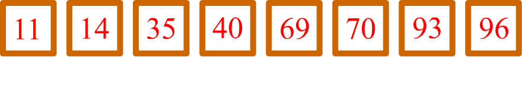

Melalui video ini, kalian diharapkan mampu untuk:
Dasar-dasar bahasa pemrograman C++ seperti perulangan, array, dan lain-lain.
Binary search adalah sebuah metode pencarian yang membagi array menjadi dua bagian dengan membandingkan nilai yang dicari dengan nilai pada indeks tengah. Oleh karena itu, syarat dari binary search adalah array yang terurut.
Untuk pemahaman yang lebih jelas, perhatikan ilustrasi berikut.

Anggap kita ingin mencari angka 69 pada array tersebut. Tanda panah menunjukkan elemen array yang kita bandingkan. Jika elemen tersebut lebih kecil daripada angka yang kita cari, maka kita harus mencari di interval yang lebih tinggi. Sebaliknya, kita harus mencari di interval yang lebih rendah jika elemen tersebut lebih besar daripada angka yang kita cari. Jika elemen tersebut ternyata sama dengan angka kita, maka kita menghentikan pencarian karena kita telah menemukan angka yang telah kita cari.
Berikut merupakan implementasi binary search dalam C++.
int l = 0, r = n-1; while(l <= r) { int mid = (l+r)/2; if(a[mid] == x) return true; // jawaban ditemukan :D else if(a[mid] < x) l = mid+1; else r = mid-1; } return false; // jawaban tidak ditemukan :(